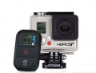

器材库 > 高清摄像机 > GoPro Hero 3+ Black Edition

规格总览
产品类型
闪存式
发布日期
未知
视频信号
NTSC, PAL
影像传感器
影像传感器
CMOS
影像传感器数量
1
总像素
1200万
镜头和对焦
镜头
超广角
光圈
F/2.8
拍摄性能
录制格式-视频
H.264 MP4
录制格式-音频
48Hz AAC/AGC
录制格式-静态图像
JPG
视频尺寸
480P240fps 720P120fps 1080P60fps 1440P48fps 4K15fps
静态图像尺寸
1200w
最低照度
专业级
拍摄模式
电影、间隔摄影/延时摄影、连拍
内置麦克风
是
内置喇叭
是
手动曝光
无
液晶屏/取景器
取景器
无
存储规格
存储卡插槽
单卡槽
存储卡
microSDHC, microSDXC
闪光灯
内置闪光灯
无
外接闪光灯
无
输入输出
数据接口
USB2.0
视频/音频接口
HDMI 输出
配件端口
外接附件接口, 耳机, 脚架螺丝孔
电源
电源（电池/电源适配器）
1050mAh可充电锂离子电池
机身规格
颜色
黑色
birdway2014-07-28 15:254.75 分
操作性 4.50功能性 5.00美观性 4.50趣味性 5.00耐用性 5.00性价比 5.00解像力 4.50色彩还原 4.50
电侠魅影2014-07-28 15:224.75 分
操作性 4.50功能性 5.00美观性 5.00趣味性 5.00耐用性 5.00性价比 4.50解像力 4.50色彩还原 4.50
Azov2014-07-28 15:194.81 分
操作性 5.00功能性 5.00美观性 5.00趣味性 5.00耐用性 4.50性价比 5.00解像力 4.50色彩还原 4.50
产品图 / 样片
1
评测 / 相关文章
该产品暂无存档的评测文章